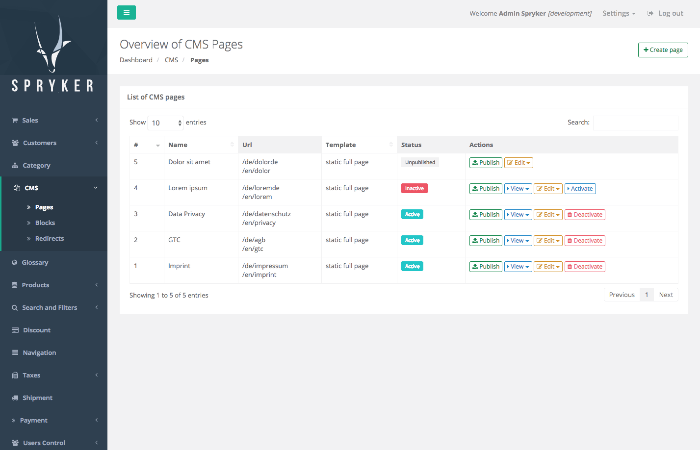

Release Notes - May - 2 2017
Features
CMS Page Draft and Page Versioning
With this release we are introducing a set of new features to CMS pages related to versioning. The CMS module now keeps the versions for every CMS page and each content. Our CMS pages now support the following functionality:
Draft: All the intermediate work done on a page now can be persisted as draft of the page. You can modify the page as many times as you need and save those changes without actually affecting the current live version of the page.
Publishing: Once your page content is final you can go ahead and publish the page. Every time you publish a page a new version for this page will be created.
Discard Draft: Before publishing a draft at any point in time you can discard the current working draft. This will discard all the changes you have made to the page since the last time it was published.
Version History: In the version history you can see all published changes related to a given page. Keep in mind that the draft state of a page is not versioned. The modifications of the current draft are not covered in the version history.
Rollback: Once your page has at least 2 versions you can rollback to a previous version.

CMS Versioning Affected Modules Major Minor Patch - Cms 5.0.0 - CmsCollector 1.0.0 - CmsGui 3.0.0 - CmsUserConnector 1.0.0 - Glossary 3.1.0 - Gui 3.2.0 - NavigationGui 1.0.1 - Session 3.1.1 - Twig 3.1.2 - User 3.0.1 - ZedNavigation 1.0.5 Documentation For module documentation see: CMS. Migration Guides To upgrade, follow the steps described below: Apply every minor and patch: composer update "spryker/*" Once that is done, upgrade to the new CMS major and its dependencies: composer require spryker/cms:"^5.0.0" spryker/cms-collector:"^1.0.0" spryker/cms-gui:"^3.0.0" spryker/cms-user-connector:"^1.0.0" For more details please check module migration guide documentation: CMS. Beta: Rest API We now provide a REST API that exposes Zed’s resources in a CRUD way. It is designed for internal usage, hence please keep in mind it must be protected with basic authentication. It maps URLs to facade methods and in this way can read and write data via API. We currently ship two crucial core modules as showcases: ProductApi CustomerApi Those both expose their CRUD operations via facade methods and make it possible to use the API to read or write data. These showcases also contain basic examples of validation. You can easily create more such modules on project level by using the same boilerplate code and adjusting it to the corresponding facade methods you want to expose. Affected Modules Major Minor Patch n/a - Api 0.1.0 - ApiQueryBuilder 0.1.0 - Customer 4.3.0 - CustomerApi 0.1.0 - ProductApi 0.1.0 - PropelQueryBuilder 0.3.0 - ProductRelation 1.0.3 - UtilEncoding 2.0.2 Documentation For a detailed look into all the features and functionality see Zed API documentation. Migration Guides To upgrade, follow the steps described below: Apply every minor and patch: composer update "spryker/*" Once that is done, upgrade to the new API and its dependencies: composer require spryker/api:"^0.1.0" spryker/api-query-builder:"^0.1.0" spryker/customer-api:"^0.1.0" spryker/product-api:"^0.1.0" spryker/propel-query-builder:"^0.3.0" Improvements Removing Image from Image Set This release introduces a new functionality for removing images from image sets. The functionality is available both for concrete and abstract products. Affected Modules Major Minor Patch n/a - ProductImage 3.1.0 n/a GUI Group Buttons With this release we are introducing a unified way of creating group buttons (GroupButtonItem) for tables in Zed UI. Generating those is now cleaner and more explicit. Affected Modules Major Minor Patch n/a n/a - CmsGui 3.0.1 - Gui 3.3.3 Application Store for Testify We now allow to set APPLICATION_STORE for tests from console. Previously the store was hardcoded to DE. This improvement now will alloy you to make tests for a different store then the default configured one. Affected Modules Major Minor Patch n/a n/a - Testify 3.2.3 Logging of Custom Exceptions in Yves Previously, for rendered exceptions by custom exception handler in Yves the exception was not logged. Now it will also always be logged away. You can find the output in application.log under log directory. Affected Modules Major Minor Patch n/a n/a - Application 3.1.5 Beta: Extended Data Set for DataFeed With this improvement we bring more data to DataFeed modules. Now you can also make use of category nodes and concrete product stocks. Affected Modules Major Minor Patch n/a - CategoryDataFeed 0.2.0 - ProductAbstractDataFeed 0.2.0 n/a Bugfixes Propel Query Builder Fixes The AssociativeArrayFormatter was not formatting all results equally. For single versus multiple result sets it was expecting the same input, which was not the real input. This issue is fixed now. AssociativeArrayFormatter can now handle input differences and return the expected associative array. In addition to this the pagination was not using a consistent offset-based strategy. The pagination is now working as expected with a single strategy, offset-based pagination using “offset” and “limit”. If you want to use page based pagination you can do so by transfer this into offset-based one beforehand. Affected Modules Major Minor Patch n/a n/a - PropelOrm 1.2.1 - PropelQueryBuilder 0.2.1 Random Clashing of Interfaces when Loading Multiple Classes In some versions, exceptions pop up due to a interface name collision between a deprecated interface and a moved one, when the class using the interface is in the same directory. By aliasing the use statements the collision is removed and it does not matter in what order they are being loaded. The deprecated interfaces will be removed in future versions. Please upgrade your commands and conditions. Affected Modules Major Minor Patch n/a n/a - Oms 6.0.2 Empty Glossary Translations Previously it was not possible to create empty translations in the glossary. We fixed this issue by removed the HTML5 required attribute from the text area for adding or editing glossary translations. Now you can save empty translations for glossary keys. Affected Modules Major Minor Patch n/a n/a - Glossary 3.1.1 Jquery Update for Security Reasons Due to a known jquery security issue (see: jquery@2.2.4) we updated jquery from version 2.2.4 to 3.x. We also added jquery-migrate to GUI module dependencies in order to support BC upgrade. Affected Modules Major Minor Patch n/a - Gui 3.3.0 - Gui 3.3.1 - Gui 3.3.2 StepEngine with Virtual Step Formerly the StepEngine had conceptual issue for showing the previous step if the previous step was a virtual one. When the step before the current step was a virtual one (meaning it does not require user input) and you would try to go back to that previous state, you would return to your current state. The reason for this was the following: as the previous step you were trying to go to does not require any inout, the StepEngine was then redirect to the next step, which is the current one. This issue is fixed now. The StepEngine now returns the first accessible step before the current step. In some cases, this might require you to update your project code. StepCollectionInterface::getPreviousStep() now has a second optional argument (AbstractTransfer $dataTransfer) which is required to check if a step is a virtual step or not. If StepEngineInterface::getTemplateVariables() is overridden by a project, it is required to update the call to StepCollectionInterface::getPreviousStep() here as well. Affected Modules Major Minor Patch - StepEngine 3.0.0 n/a - Braintree 0.5.1 - Checkout 3.0.1 - DummyPayment 2.0.1 - Payolution 3.0.1 - Ratepay 0.5.1 Duplicate Products in Product Relations Due to a wrong query in product relation selection tab duplicate products were displayed. This issue is fixed now. Affected Modules Major Minor Patch n/a n/a - ProductRelation 1.0.4 Glossary MySQL Compatibility Previously due to ILIKE usage in SQL Glossary was not compatible with MySQL which was causing issues when rendering Zed UI tables. We replaces ILIKEwith LIKE to ensure MySQL compatibility. Affected Modules Major Minor Patch n/a n/a - Glossary 3.1.2 ProductManagement Stock Fix In Product Management interface we had an issue for setting the stock of a product to 0 for one warehouse, when the product was not available in any other warehouse. This issues is fixed now. We have removed this UI validation for stock to allow all warehouses to have stock with value of 0 if needed. Affected Modules Major Minor Patch n/a n/a - ProductManagement 0.4.1 Mail Attachment The Mail module had an issue with handling attachments. The transfer definition contained an error. We changed the field specification from Attachment to MailAttachment to fix this issue. Affected Modules Major Minor Patch n/a n/a - Mail 4.0.1 Cart Item Editing for Removed Item Previously if the user would perform any action in the cart with a product that was already removed from the cart, an exception was thrown. This issue is fixed now. Instead of an exception the cart will reload now when item is not found. Affected Modules Major Minor Patch n/a n/a - Cart 3.1.1 Documentation Updates Oryx: Oryx is the frontend helper and replacement for Antelope. Read more here. Download and Structure: In this updated documentation we cover all the essentials about how to download the external dependencies and where to place them, together with your own asset files. See here. Build and Optimization: To learn more about Webpack and Spryker Oryx frontend helper check our up-to-date documentation. See here. Frontend Overview: In this page you can find references to all relevant frontend documentation pages. See here. Frontend Public Folder: Want to know more about the public folder for built assets? Check here. CMS: We have updated CMS content to include all the new features related to versionoing. Read more here. CMS Migration: To get more details on how to update from version 3.* and 4.* to 5.*, see here. Data Feed Modules: To read more about our Data Feed Modules, check here.